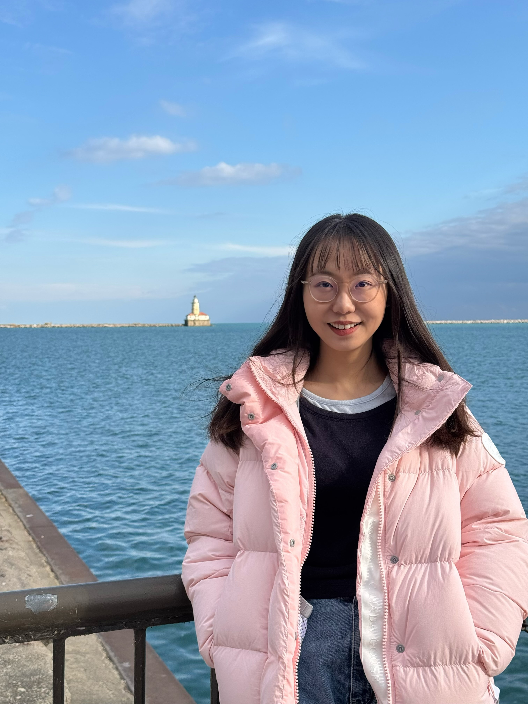

I am a fifth-year Ph.D. student in the Department of Computer Science at the University of Chicago, advised by Prof. Junchen Jiang and Prof. Shan Lu. My research builds efficient inference systems for large language models — in particular, I've built the first compression and streaming system for KV cache that's designed to reduce its inline network transmission latency -- CacheGen, and the first translation system for KV cache between two different LLMs -- DroidSpeak.
I received my B.S. in Computer Science from the University of Wisconsin–Madison, where I was fortunate to be advised by Prof. Shivaram Venkataraman. In Summer 2024 I was a research intern at Microsoft Research, mentored by Madan Musuvathi and Esha Choukse.
* denotes equal contribution. Full list available on Google Scholar.
The first open-source Knowledge Delivery Network for LLM applications. Accelerates inference up to 8× at 8× lower cost.
Scale from a single vLLM instance to a distributed deployment without changing a line of application code.